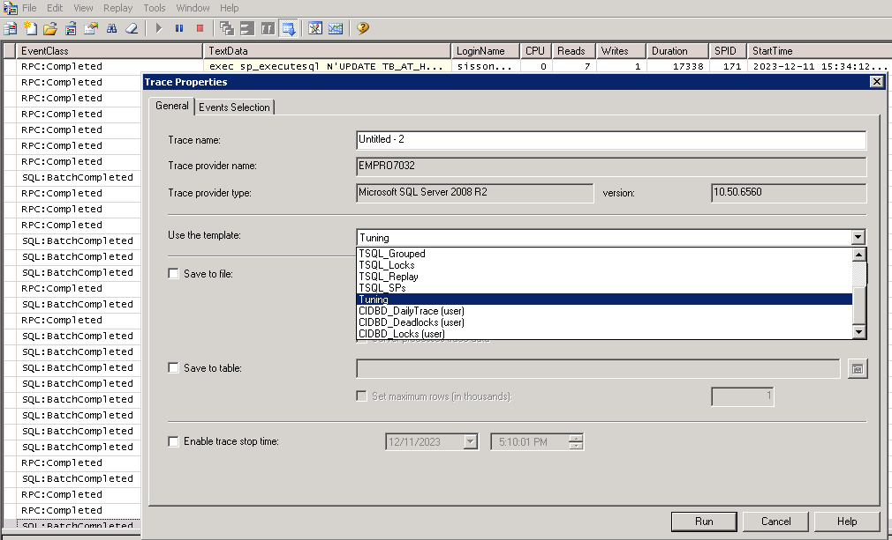

Capítulo 5: Índices Ausentes
Os índices no SQL Server fornecem acesso otimizado aos dados dentro de um banco de dados, e uma das causas comuns de problemas de desempenho com um banco de dados do SQL Server é a ausência ou índices incorretos em tabelas dentro do banco de dados.
Grandes avanços foram feitos no SQL Server 2005 e 2008 para ajudar a identificar índices ausentes, por meio do uso de:
- O Database Engine Tuning Advisor - analisa os planos de execução gerados para uma carga de trabalho fornecida, juntamente com as características físicas do banco de dados, e recomenda um conjunto de índices.
- O recurso Missing Index - fornece informações sobre índices potencialmente úteis, armazenados nas Visualizações de Gerenciamento Dinâmico e em XML Showplans.
No entanto, as informações fornecidas por essas ferramentas, especialmente a última, podem causar problemas quando usadas incorretamente. Abordaremos dois dos fatores mais críticos relacionados à estrutura apropriada dos índices a serem criados, ou seja, a ordem das colunas chave do índice e o uso adequado de colunas incluídas. Isso ajudará você a avaliar e verificar as recomendações de índices feitas por essas ferramentas, levando em consideração o seu conhecimento sobre os dados e a carga de trabalho para o banco de dados em questão.
Finalmente, como os índices têm um custo de manutenção, discutiremos como identificar quaisquer índices desnecessários em seu banco de dados, seja índices duplicados ou aqueles que estão sendo mantidos, mas nunca são usados por consultas.
Observe que este capítulo se concentra exclusivamente em identificar um conjunto apropriado de índices para um determinado banco de dados; problemas relacionados a índices que também poderiam afetar o desempenho de consultas, como fragmentação de índices, não são abordados.
Seleção e Design de Índices
Selecionar o conjunto apropriado de índices para um banco de dados requer compreender como o banco de dados é utilizado e os dados que ele contém. Uma estratégia de indexação que pode ser aplicada a um data warehouse ou a um sistema de suporte à decisão será muito diferente da estratégia adequada para um sistema de processamento de transações online (OLTP). No entanto, em qualquer tipo de banco de dados, a estratégia geral de indexação deve ser estabelecer índices que não sejam necessariamente específicos para consultas, mas que proporcionem o melhor desempenho para a carga de trabalho geral no banco de dados.
Ao definir um conjunto apropriado de índices, você garantirá que as consultas mais significativas em sua carga de trabalho possam ler apenas a quantidade mínima de dados necessária e de maneira lógica e ordenada, permitindo que elas retornem esses dados rapidamente e eficientemente, com um mínimo de operações de leitura I/O.
Por outro lado, se um banco de dados não tiver um conjunto adequado de índices para a carga de trabalho necessária, então qualquer busca em colunas não indexadas será resolvida realizando varreduras no índice clusterizado ou varreduras na tabela, lendo muito mais dados do que o necessário para retornar o conjunto de resultados desejado e resultando em altos custos associados à leitura I/O.
Para compreender a carga de trabalho geral, é preciso primeiro conhecer as consultas específicas que serão executadas no banco de dados e com que frequência cada uma delas será executada. Um índice que melhora o desempenho de uma única consulta que é executada uma ou duas vezes por dia pode não valer a pena ser criado se a consulta, quando executada, não afetar o desempenho geral do servidor. No entanto, se a mesma consulta for executada algumas milhares de vezes por hora, o impacto do índice provavelmente seria significativo o suficiente para que sua criação seja benéfica.
Lembre-se de que, embora os índices possam melhorar o desempenho de consultas específicas no SQL Server, eles não são gratuitos. Há um custo associado à manutenção dos registros contidos em cada índice, e esse custo deve ser equilibrado com os benefícios de desempenho que cada índice individual fornece. Um banco de dados com muitos índices terá um grande custo de gravação I/O associado à manutenção dos índices, para cada operação de INSERT e DELETE, bem como para quaisquer operações de UPDATE que afetem uma coluna indexada. Além disso, à medida que seus índices crescem em tamanho e número, o custo de realizar trabalhos de manutenção de rotina, como backups, reorganização e reconstrução de índices, e operações DBCC CHECKDB, aumentará proporcionalmente.
Ordem das Colunas-Chave do Índice
É bastante comum encontrar recomendações online que afirmam que as colunas-chave do índice devem ser ordenadas com base em sua cardinalidade (ou seletividade), com a ideia de reduzir o número de páginas que precisam ser lidas para corresponder a um conjunto de colunas de filtragem ou agrupamento.
No entanto, selecionar a ordem apropriada das colunas-chave nunca é tão simples como a maioria dos conteúdos online faz parecer, e geralmente não se encontra muita orientação sobre quando e por que você pode optar por criar um índice com colunas em uma ordem diferente da ordem de cardinalidade. Por exemplo, é melhor criar vários índices, onde cada índice individual tem a ordem ideal das colunas-chave com base na seletividade da coluna, ou criar um único índice que cubra várias consultas, mas com uma ordem de coluna menos seletiva?
Em última análise, sua decisão deve ser baseada no tipo de banco de dados para o qual o índice está sendo implementado. Para um data warehouse, onde há significativamente mais operações de leitura do que operações de gravação, a opção de múltiplos índices pode ser apropriada. Para um sistema OLTP, onde há mais gravações do que leituras, um índice menos seletivo que cubra várias consultas usando uma ordem de coluna menos do que ótima pode ser a mais apropriada.
O ponto mais importante a ser compreendido, no entanto, em relação à ordem das colunas-chave do índice, é que uma consulta não pode buscar (seek) em um índice, a menos que os filtros da consulta estejam baseados em um subconjunto à esquerda da chave do índice. Para demonstrar esse ponto, digamos que temos o índice e as consultas mostradas na Listagem 5.1.
CREATE INDEX idx_Test ON TestTable (Col2, Col1, Col3)
SELECT 1
FROM TestTable
WHERE Col1 = @Var1
AND Col2 = @Var2
AND Col3 = @Var3
SELECT 1
FROM TestTable
WHERE Col1 = @Var1
AND Col3 = @Var3
SELECT 1
FROM TestTable
WHERE Col2 = @Var2
AND Col3 = @Var3
Listagem 5.1: Diversas consultas em um índice simples de três colunas.
A primeira consulta pode buscar efetivamente no índice porque filtra todas as três colunas do índice (a ordem das cláusulas na cláusula WHERE é irrelevante).
A segunda consulta não pode buscar (seek) nesse índice; a coluna principal do índice é Col2 e essa consulta não filtra por Col2. A consulta pode usar esse índice, mas apenas por meio de uma varredura (scan).
A terceira consulta pode buscar no índice, mas a busca não é tão eficiente quanto poderia ser, pois o SQL só pode buscar por Col2; seria necessário fazer um filtro secundário para Col3, já que Col3 não é a segunda coluna no índice.
Se eu quisesse criar o número mínimo de índices que permitissem ao SQL Server resolver todas as três consultas da maneira mais eficiente possível, ou seja, com busca no índice, eu poderia criar um índice para cada consulta, ou poderia tentar várias combinações de dois índices, com diferentes ordens de colunas-chave. A seletividade das várias colunas ajudaria a escolher o par mais apropriado. Algumas das opções são mostradas na Listagem 5.2.
--3 possible pairs of indexes
CREATE INDEX idx_Test1
ON TestTable (Col1, Col3, Col2)
CREATE INDEX idx_Test1
ON TestTable (Col2, Col3)
--OR—
CREATE INDEX idx_Test
ON TestTable (Col2, Col3, Col1)
CREATE INDEX idx_Test1
ON TestTable (Col1, Col3)
--OR--
CREATE INDEX idx_Test
ON TestTable (Col3, Col1, Col2)
CREATE INDEX idx_Test1
ON TestTable (Col2, Col3)
Listagem 5.2: Três possíveis pares de índices.
Vamos dar uma olhada em um exemplo rápido do AdventureWorks. A Listagem 5.3 mostra três consultas, cada uma com um predicado diferente na cláusula WHERE.
SELECT BusinessEntityID ,
PersonType ,
FirstName ,
MiddleName ,
LastName ,
EmailPromotion
FROM Person.Person AS p
WHERE FirstName = 'Carol'
AND PersonType = 'SC'
SELECT BusinessEntityID ,
FirstName ,
LastName
FROM Person.Person AS p
WHERE PersonType = 'GC'
AND Title = 'Ms.'
SELECT BusinessEntityID ,
PersonType ,
EmailPromotion
FROM Person.Person AS p
WHERE Title = 'Mr.'
AND FirstName = 'Paul'
AND LastName = 'Shakespear'
Listagem 5.3: Três consultas no AdventureWorks.
Poderíamos criar três índices, cada um perfeitamente adequado a uma única consulta, e em um ambiente de data warehouse, essa pode ser de fato a melhor opção. Em um ambiente OLTP, onde o número de índices deve ser mantido baixo para manter um bom desempenho de INSERT, pode não ser uma ideia tão boa.
Em termos de seletividade, a coluna LastName é a mais seletiva, seguida de perto por FirstName. As colunas Title e PersonType têm uma seletividade muito menor, cada uma com apenas seis valores distintos na tabela. Neste caso, poderíamos criar apenas os dois índices mostrados na Listagem 5.4 e ter todas as consultas na Listagem 5.3 com um desempenho muito bom.
CREATE INDEX idx_Person_FirstNameLastNameTitleType
ON Person.Person (FirstName, LastName, Title, PersonType)
CREATE INDEX idx_Person_TypeTitle
ON Person.Person (PersonType, Title)
Listagem 5.4: Dois índices, projetados com base na seletividade das colunas.
O primeiro índice atende às primeiras e terceiras consultas. Não é perfeito para a primeira consulta, mas, dado o quão seletiva é a coluna FirstName, é provável que seja suficientemente bom. Escolhi colocar FirstName como a coluna principal, apesar de ter uma seletividade ligeiramente pior do que LastName, porque se eu colocasse LastName como a coluna principal, a primeira consulta não poderia buscar (seek) nela e eu precisaria de um terceiro índice para atender completamente todas as consultas.
Com o segundo índice, a ordem das colunas é arbitrária. Nem as consultas nem a seletividade mostram uma ordem preferida, então qualquer opção funciona. Em um ambiente real, a ordem provavelmente seria decidida por outros índices ou consultas.
Deve ficar claro, mesmo com esse exemplo relativamente simples, que determinar a ordem ideal das colunas para um índice pode ser um processo complexo e não é algo que deve ser decidido sem análise e investigação suficientes.
Mais sobre seletividade de índices
A MVP do SQL Server e Revisora Técnica deste livro, Gail Shaw, discute este tópico com mais detalhes em suas duas postagens de blog: "Index columns, selectivity and equality predicates" (http://sqlinthewild.co.za/index.php/2009/01/19/index-columns-selectivity-and-equality-predicates/) e "Index columns, selectivity and inequality predicates" (http://sqlinthewild.co.za/index.php/2009/02/06/index-columns-selectivity-and-inequality-predicates/).Uso de colunas incluídas
Muitos dos recursos descritos no restante deste capítulo, para identificar índices ausentes nos bancos de dados de uma instância do SQL Server, farão recomendações sobre o uso de colunas include, portanto, uma breve discussão sobre os benefícios e impacto das colunas incluídas é necessária.
As colunas incluídas, um recurso introduzido no SQL Server 2005, permitem a criação de índices não clusterizados que contêm colunas não chave como parte da definição do índice, de modo que um único índice possa cobrir mais consultas. As colunas chave de um índice são armazenadas em todos os níveis do índice, mas as colunas incluídas são armazenadas apenas no nível das folhas do índice. O uso típico para colunas incluídas é na criação de índices que cobrem consultas. Um índice de cobertura é aquele que contém todas as colunas necessárias para uma consulta, seja como colunas chave ou não chave, evitando a necessidade de acessar a tabela ou o índice clusterizado usando operações de pesquisa (lookup), diminuindo assim o número de operações de I/O necessárias para retornar os dados.
As colunas incluídas só podem ser criadas em índices não clusterizados, e as colunas não chave não contam para a limitação de tamanho de chave de 900 bytes ou 16 colunas existente no SQL Server. As colunas não chave podem utilizar tipos de dados não permitidos para as colunas chave do índice; todos os tipos de dados, exceto os tipos legados text, ntext e image, são suportados. Além disso, no SQL Server 2008, colunas varbinary (max) que têm o atributo FILESTREAM não podem ser incluídas em um índice. Embora os novos tipos de dados large object (LOB) sejam suportados como colunas não chave, existem implicações de desempenho com a manutenção das colunas incluídas, uma vez que os valores das colunas são copiados no nível das folhas do índice não clusterizado que as contém. Isso resultará em altos requisitos de espaço em disco para armazenar o índice e também em um aumento na demanda por I/O e uma redução na eficiência do cache de buffer.
Novamente, o grau em que você utiliza colunas incluídas em sua estratégia de indexação para um banco de dados depende das características de uso desse banco de dados. Os ganhos no desempenho da consulta que as colunas incluídas podem proporcionar devem ser equilibrados com o custo de maiores requisitos de espaço em disco, menor eficiência do cache e redução do desempenho das operações de manipulação de dados. Em ambientes de data warehouse, pode ser aceitável ter índices não clusterizados com listas longas de colunas incluídas para cobrir as consultas que podem ser executadas, se durante o processo de extração-transformação-carga (ETL) os índices podem ser desabilitados ou removidos para eliminar o impacto da manutenção do índice durante o carregamento de dados. Em contraste, bancos de dados transacionais geralmente usariam menos colunas incluídas devido ao impacto no desempenho das operações de manipulação de dados.
Criar um índice de cobertura para uma consulta pode ser uma das melhores maneiras de fazer com que uma consulta tenha um bom desempenho, no entanto, nem todas as consultas podem ser cobertas, e nem todas as consultas devem ser cobertas. Em um ambiente OLTP, isso deve ser considerado apenas para consultas críticas, ou seja, consultas que são executadas com frequência e precisam ser executadas o mais rápido possível. Tentar cobrir todas as consultas que são executadas em um ambiente quase certamente aumentará significativamente o tamanho do banco de dados e terá efeitos prejudiciais no desempenho de manipulação de dados.
Portanto, dadas essas considerações, vamos pegar um dos exemplos anteriores do AdventureWorks e ver como podemos usar colunas incluídas para tornar a consulta na Listagem 5.5 ainda mais eficiente.
SELECT BusinessEntityID ,
FirstName ,
LastName
FROM Person.Person AS p
WHERE PersonType = 'GC'
AND Title = 'Ms.'
Listagem 5.5: Uma consulta no AdventureWorks.
O índice que escolhemos para esta consulta é mostrado na Listagem 5.6.
CREATE INDEX idx_Person_TypeTitle
ON Person.Person (Title, PersonType)
Listagem 5.6: Um índice não cobrindo.
Esse índice não cobre a consulta. Embora ele contenha todas as colunas necessárias para a cláusula WHERE, não possui como parte do índice as três colunas do SELECT. O SQL Server precisará fazer uma pesquisa (lookup) no índice clusterizado para buscar essas colunas.
Agora, se adicionarmos essas três colunas a este índice, ele se tornaria um índice de cobertura para esta consulta. Não queremos que elas sejam colunas chave; fazê-lo tornaria a chave desnecessariamente extensa. Uma vez que essas colunas não estão sendo filtradas ou unidas, não há necessidade de tê-las como colunas chave; portanto, podemos torná-las colunas incluídas em vez disso, como mostrado na Listagem 5.7.
CREATE INDEX idx_Person_TypeTitle
ON Person.Person (Title, PersonType)
INCLUDE (BusinessEntityID, FirstName, LastName)
Listagem 5.7: Adicionando colunas incluídas para cobrir uma consulta.
Agora o índice contém todas as colunas necessárias para a consulta, e a consulta é tão eficiente quanto possível, pois não precisa mais fazer pesquisas (lookups). A compensação é que o índice é ligeiramente maior e as modificações de dados que afetam qualquer uma das três colunas incluídas requerem mais trabalho.
Largura do índice
Não há uma regra estrita que governe a largura de um índice, e não discutiremos o assunto em detalhes aqui. No entanto, em geral, você deseja que o índice seja o mais estreito possível, ao mesmo tempo em que obtém resultados de pesquisa precisos. Isso significa que os índices idealmente devem compreender o menor número possível de colunas, consistindo em tipos de dados menores em vez de maiores. Claro, o último ponto depende bastante de como as tabelas subjacentes foram projetadas de forma inteligente.
Embora certamente você não queira que nenhuma coluna faça parte da chave que não precisa estar lá, também não é sábio optar por um grande número de índices de coluna única. Gail Shaw discute o tópico de um único índice de várias colunas versus múltiplos índices de coluna única em mais detalhes em sua postagem de blog, One wide index or multiple narrow indexes? (http://sqlinthewild.co.za/index.php/2010/09/14/one-wide-index-or-multiplenarrow-indexes/), provando em seu exemplo que o índice único de várias colunas é a melhor abordagem.
Identificação de índices ausentes
O SQL Server 2005 e versões posteriores oferecem várias ferramentas que podem ajudar a identificar índices que podem beneficiar o desempenho de uma carga de trabalho ou consulta específica.
- Database Engine Tuning Advisor - uma versão significativamente aprimorada e expandida da antiga Index Tuning Wizard, o DTA analisa os planos de execução gerados para uma carga de trabalho fornecida, juntamente com as características físicas do banco de dados, e recomenda um conjunto de índices.
- Recurso de Índice Ausente - durante a otimização de consulta, o Query Optimizer identifica índices que ele acredita que seriam benéficos para o desempenho da consulta específica em processo de otimização. Essas informações são armazenadas em dois locais:
- As Visões de Gerenciamento Dinâmico de Índice Ausente - um grupo de quatro DMVs, identificados por
sys.dm_db_missing_index_*, onde * representa detalhes, colunas, group_stats ou grupos. - XML showplans - informações de índice ausente também podem ser extraídas do elemento
MissingIndexGroupdesses showplans.
É importante ter em mente que, embora esses recursos possam ser muito úteis para determinar os índices que podem ser benéficos para seus bancos de dados, eles também podem ser uma faca de dois gumes e causar mais problemas do que soluções quando usados incorretamente. Implementar cegamente as recomendações de qualquer um desses recursos quase sempre resultará em índices duplicados ou sobrepostos no banco de dados, bem como em um excesso de índices, ao invés de poucos.
Análise de carga de trabalho com o Database Engine Tuning Advisor
Uma das maneiras mais fáceis de identificar os índices ausentes para um banco de dados SQL, se você não entender bem os conceitos por trás da seleção de índices para criar manualmente, é usar o Database Engine Tuning Advisor (DTA).
O DTA pode ser usado para analisar uma única consulta ou uma carga de trabalho inteira do banco de dados, na forma de um arquivo de rastreamento gerado pelo SQL Server Profiler. Obviamente, isso significa que a qualidade da análise de índice do DTA será tão alta quanto a qualidade da carga de trabalho fornecida para a ferramenta analisar. Se a carga de trabalho não representar de forma adequada a carga de trabalho típica para aquele banco de dados e estiver faltando consultas significativas, as sugestões de índices também serão incompletas, imprecisas ou simplesmente erradas.
Coletando um rastreamento de carga de trabalho
Para obter os melhores resultados e recomendações do DTA, o rastreamento de carga de trabalho deve conter uma parte significativa da carga de trabalho padrão do banco de dados sendo analisado. Como parte de sua análise, o DTA estima o impacto de quaisquer alterações de índice sugeridas no desempenho da carga de trabalho como um todo. Isso ajuda a evitar que ele recomende um índice que melhore o desempenho de uma consulta individual específica, mas tenha um impacto geral negativo na carga de trabalho. Portanto, se você fornecer apenas uma única consulta ao DTA para análise, as recomendações fornecidas pelo DTA podem ser muito diferentes do que seria recomendado se a mesma consulta fosse analisada como parte de uma carga de trabalho completa para o banco de dados.
O SQL Server Profiler fornece um modelo de rastreamento SQL embutido, o modelo Tuning, que foi projetado para capturar os eventos necessários para uma carga de trabalho para análise pelo DTA. Para usar esse modelo, abra o SQL Server Profiler e conecte-se à instância do SQL Server. Na janela Propriedades do Rastreamento (Figura 5.1), selecione o modelo Tuning no menu suspenso Use o modelo.
Figura 5.1: SQL Profiler - Janela Propriedades do Rastreamento.
É possível executar o rastreamento de ajuste diretamente no SQL Profiler e salvá-lo em um arquivo ou tabela de rastreamento. No entanto, a coleta de rastreamentos do lado do cliente pode causar uma deterioração do desempenho do servidor em análise, devido ao custo adicional de armazenar os eventos em buffer na memória e o tráfego de rede necessário para enviar os eventos para o SQL Server Profiler usando o provedor de conjuntos de linhas (rowset provider).
Impacto do provedor de conjuntos de linhas no desempenho do Profiler
Para obter mais informações e análises sobre esse tópico, consulte a postagem do SQL Server MVP Grant Fritchey, "Profiler Research", em (http://www.scarydba.com/2008/12/18/profiler-research/).
Uma maneira muito melhor de capturar um arquivo de rastreamento de carga de trabalho para análise pelo Database Tuning Advisor é criar a definição de rastreamento no cliente, usando o Profiler, mas executar o rastreamento no servidor. Para criar a definição de rastreamento, inicie manualmente o rastreamento de ajuste no Profiler, mas pare-o imediatamente. Em seguida, no menu Exportar (File Menu), selecione Script Trace Definition | Para SQL Server 2005 - 2008 (Figura 5.2).
Figura 5.2: SQL Profiler - Definição de Script de Rastreamento.
Isso salva um arquivo de definição de rastreamento (.sql) contendo todo o código necessário para criar e iniciar um rastreamento do lado do servidor. Este arquivo de rastreamento gerado pode ser editado conforme necessário e, em seguida, executado manualmente ou agendado conforme necessário. Abra o arquivo no SSMS para editá-lo. Primeiramente, substitua a variável @FileName pelo caminho e nome de arquivo a ser criado no servidor e, em seguida, execute o script para iniciar o rastreamento (na Listagem 5.8, adicione o caminho e nome de arquivo onde o script diz 'InsertFileNameHere'). Apenas o nome do arquivo é necessário, pois a extensão .trc será adicionada automaticamente.
Depois de salvar o arquivo, abra-o no SQL Server Management Studio e edite-o. Em seguida, altere a variável @maxfilesize para um tamanho que faça sentido, com base no nível de atividade do banco de dados sendo rastreado. Existem opções adicionais para a definição do rastreamento, que não estão incluídas na definição do script fornecida pelo SQL Profiler. O parâmetro @stoptime de sp_trace_create pode ser usado para especificar um horário de término automático para a coleta de rastreamento. O parâmetro @filecount pode ser usado para especificar o número de arquivos de rolagem a serem mantidos para o rastreamento, se o parâmetro @options tiver sido configurado para permitir a rolagem.
Quando essas opções adicionais forem especificadas, elas devem ser especificadas na ordem exata listada no tópico Books Online para sp_trace_create (http://msdn.microsoft.com/en-us/library/ms190362.aspx).
O script final, mostrado na Listagem 5.8, irá fornecer o traceid do rastreamento que está sendo criado, permitindo que ele seja interrompido e excluído usando sp_trace_setstatus após o período de coleta ser concluído.
DECLARE @rc INT
DECLARE @TraceID INT
DECLARE @maxfilesize BIGINT
SET @maxfilesize = 50
EXEC @rc = sp_trace_create @TraceID OUTPUT, 0, N'InsertFileNameHere',
@maxfilesize, NULL
IF ( @rc != 0 )
GOTO error
-- Client side File and Table cannot be scripted
-- Set the events
DECLARE @on BIT
SET @on = 1
EXEC sp_trace_setevent @TraceID, 137, 15, @on
EXEC sp_trace_setevent @TraceID, 137, 1, @on
EXEC sp_trace_setevent @TraceID, 137, 13, @on
-- Set the Filters
DECLARE @intfilter INT
DECLARE @bigintfilter BIGINT
-- Set the trace status to start
EXEC sp_trace_setstatus @TraceID, 1
-- display trace id for future references
SELECT TraceID = @TraceID
GOTO finish
error:
SELECT ErrorCode = @rc
finish:
go
Listagem 5.8: O rastreamento de ajuste completo e editado do lado do servidor.
Analisando uma carga de trabalho de rastreamento
O Database Tuning Advisor (DTA) pode ser aberto no menu Ferramentas do SQL Server Management Studio; uma nova sessão de ajuste é iniciada automaticamente e o arquivo de carga de trabalho capturado pode ser carregado. A tela de configuração da sessão de ajuste possui duas abas: Geral e Opções de Ajuste. A aba Geral (Figura 5.3) contém o nome da sessão que está executando o DTA, o tipo de carga de trabalho a ser utilizada, a localização da fonte da carga de trabalho, um menu suspenso para selecionar o banco de dados a ser analisado e uma visualização em grade para permitir a seleção de bancos de dados e tabelas específicas para ajustar com base na carga de trabalho.

Figura 5.3: Database Tuning Advisor - Aba Geral.
A aba Opções de Ajuste (Figura 5.4) contém as opções que serão usadas durante a análise de ajuste da carga de trabalho. Dependendo do tamanho do arquivo de rastreamento de carga de trabalho, a análise de ajuste pode levar muito tempo. A caixa de seleção Limitar tempo de ajuste permite especificar um horário de término para a análise. Nas seções seguintes, você pode especificar as Estruturas de Design Físico a serem usadas pelo DTA ao fazer recomendações (neste caso, índices), se a partição deve ou não ser usada e quais Estruturas de Design Físico existentes devem ser mantidas no banco de dados. O botão Opções Avançadas permite definir o espaço em disco máximo, em megabytes, que pode ser usado para armazenar as várias recomendações, bem como se as recomendações de indexação são feitas para operações online ou offline. Figura 5.4: Database Tuning Advisor - Aba Opções de Ajuste. Após configurar as opções apropriadas, você pode iniciar a análise de índices clicando em Iniciar Análise na barra de menu do DTA, e o DTA começará a analisar a carga de trabalho. Durante esta análise, ele criará e excluirá índices e estatísticas hipotéticos e realizará uma análise de impacto de cada um. O log de ajuste do DTA rastreará o progresso da sessão de ajuste, caso a opção tenha sido marcada na aba Geral do DTA, e exibirá mensagens conforme a sessão avança. Revisando as recomendações de índices Quando a sessão de ajuste é concluída, as recomendações do DTA relacionadas a índices e estatísticas associadas serão exibidas na aba Recomendações (Figura 5.5). Essas recomendações podem ser salvas em um arquivo para aplicação manual posteriormente ou aplicadas imediatamente ao banco de dados, selecionando a opção apropriada no menu Ações. Além disso, o DTA oferece a capacidade de realizar outra análise "what-if" de um subconjunto das recomendações, permitindo que você determine o impacto da melhoria estimada ao remover (desmarcar) algumas das recomendações do conjunto de análises. É altamente recomendável que quaisquer recomendações de índices feitas pelo DTA sejam testadas em um ambiente de teste isolado antes de implementá-las em produção. Você pode fazer isso manualmente ou usando a opção Ações | Avaliar Recomendações do DTA para aplicar as alterações e, em seguida, avaliar seu verdadeiro impacto executando novamente a análise de ajuste da carga de trabalho. Figura 5.5: Database Tuning Advisor - Aba Recomendações. Recurso de índices ausentes No SQL Server 2005 e posterior, o mecanismo de banco de dados registra informações sobre índices que não existem, mas que o otimizador poderia ter usado durante a otimização do plano de consulta para melhorar o desempenho de uma determinada instrução SQL. Essas informações são armazenadas nas Visualizações de Gerenciamento Dinâmico (DMVs) de índices ausentes e no elemento MissingIndexGroup do showplan XML para uma consulta, e teoricamente podem ser usadas para identificar e criar índices benéficos. Sem dúvida, é um recurso útil, mas vou afirmar desde o início que, se você criar cegamente todos os índices recomendados por esse recurso de índice ausente, provavelmente causará mais danos do que benefícios ao desempenho do seu banco de dados. O maior problema é que, ao contrário das recomendações provenientes do DTA, essas recomendações de índice ausente não são baseadas em carga de trabalho; elas são derivadas da execução de consultas individuais e não levam em conta outras recomendações de índices provenientes da execução de outras consultas. Como resultado, é muito comum que o recurso de índice ausente recomende índices sobrepostos e até mesmo duplicados. No entanto, quando usado com o devido cuidado, o recurso de índice ausente pode ajudá-lo a descobrir os poucos índices que realmente podem fazer uma grande diferença no desempenho geral de sua carga de trabalho, ou aqueles índices que, com uma pequena modificação em sua definição, poderiam abranger muitas mais consultas. Visualizações de Gerenciamento Dinâmico (DMVs) de índices ausentes A maneira mais rápida de recuperar informações relacionadas aos índices ausentes, identificados pelo otimizador de consultas, é consultar as Visualizações de Gerenciamento Dinâmico (DMVs) de índices ausentes. Existem quatro DMVs associados ao recurso de índice ausente no SQL Server: • sys.dm_db_missing_index_details - armazena informações detalhadas sobre índices que o otimizador teria usado se estivessem disponíveis, como colunas que poderiam ter sido usadas para resolver predicados de igualdade ou desigualdade, e colunas INCLUDE sugeridas para cobrir uma consulta. • sys.dm_db_missing_index_columns - aceita um index_handle e retorna uma lista de colunas que comporiam o índice sugerido. • sys.dm_db_missing_index_group_stats - fornece informações resumidas sobre o benefício potencial de um índice "ausente", com base, por exemplo, no número de pesquisas e varreduras que se beneficiariam. • sys.dm_db_missing_index_groups - uma visualização de junção entre _group_stats e _index_details. Essas visualizações, quando unidas, podem identificar índices ausentes e fornecer a redução de custos estimada pelo otimizador se o índice fosse criado. As visualizações sys.dm_db_missing_index_group_stats e sys.dm_db_missing_index_groups, apesar de seus nomes, na verdade não contêm grupos de índices; os grupos (a partir do SQL Server 2008 R2) se referem a apenas um índice ausente rastreado no sistema. As informações armazenadas nessas DMVs são certamente úteis, mas existem várias limitações que você precisa considerar ao basear suas escolhas de índices nesses dados, incluindo o seguinte: • as informações contidas nessas DMVs estão em armazenamento volátil; ou seja, elas existem apenas na memória e não persistem além de reinicializações do serviço SQL, ou alterações no estado de um banco de dados, como restaurar o banco de dados, desanexar o banco de dados, colocar o banco de dados offline ou fechar o banco de dados pela opção AutoClose. • as estatísticas são armazenadas apenas para um máximo de 500 grupos de índices ausentes. • as colunas-chave do índice, especificadas pelas saídas de colunas de igualdade e desigualdade das DMVs sys.dm_db_missing_index_details e sys.dm_db_missing_index_columns, não são ordenadas de acordo com a cardinalidade. Como discutido anteriormente neste capítulo, muitas vezes (embora nem sempre) é melhor ordenar as colunas-chave do índice de forma que a coluna mais seletiva seja a primeira coluna no índice. Isso reduz o número de páginas do banco de dados que o mecanismo de banco de dados precisa ler ao percorrer o índice para atender à consulta. No entanto, ao contrário das recomendações da DTA, as recomendações de índices ausentes armazenadas nas DMVs não consideram a cardinalidade das colunas-chave; em outras palavras, elas não são baseadas nos dados contidos nas colunas-chave que estão sendo recomendadas para criação. Portanto, é necessário realizar uma análise manual adicional da cardinalidade das colunas-chave para chegar à estrutura ideal do índice. Essas limitações significam que essa ferramenta é melhor usada para identificar lacunas significativas em uma estratégia de indexação, em vez de ser usada como uma ferramenta de ajuste fino. A abordagem recomendada é identificar índices potencialmente úteis, listando primeiro aqueles que oferecem o maior benefício potencial de desempenho de acordo com as métricas armazenadas na DMV sys.dm_missing_index_group_stats. Por exemplo, na DMV sys.dm_missing_index_group_stats, as colunas user_seeks e user_scans fornecem o número de operações de busca e varredura que se beneficiariam de uma determinada recomendação de índice. A coluna avg_total_user_cost fornece a redução média no custo da consulta como resultado da criação do índice, e a coluna avg_user_impact fornece a redução percentual no custo da consulta, caso o índice existisse. Juntas, essas colunas podem ser usadas para gerar uma melhoria geral estimada no desempenho associada a um índice ausente específico no banco de dados. Existem várias maneiras de calcular essa melhoria estimada no desempenho, mas a fórmula geralmente aceita, mostrada na Listagem 5.9, foi fornecida com a permissão gentil de Bart Duncan, um dos membros da equipe de produtos do SQL Server da Microsoft, em seu post no blog MSDN, Você está usando as DMVs de índices ausentes do SQL? (http://blogs.msdn.com/b/bartd/archive/2007/07/19/are-you-using-sql-s-missing-index-dmvs.aspx). SELECT migs.avg_total_user_cost * ( migs.avg_user_impact / 100.0 ) * ( migs.user_seeks + migs.user_scans ) AS improvement_measure , 'CREATE INDEX [missing_index_' + CONVERT (VARCHAR, mig.index_group_handle) + '_' + CONVERT (VARCHAR, mid.index_handle) + '_' + LEFT(PARSENAME(mid.statement, 1), 32) + ']' + ' ON ' + mid.statement184 Chapter 5: Missing Indexes + ' (' + ISNULL(mid.equality_columns, '') + CASE WHEN mid.equality_columns IS NOT NULL AND mid.inequality_columns IS NOT NULL THEN ',' ELSE '' END + ISNULL(mid.inequality_columns, '') + ')' + ISNULL(' INCLUDE (' + mid.included_columns + ')', '') AS create_index_statement , migs.* , mid.database_id , mid.[object_id] FROM sys.dm_db_missing_index_groups mig INNER JOIN sys.dm_db_missing_index_group_stats migs ON migs.group_handle = mig.index_group_handle INNER JOIN sys.dm_db_missing_index_details mid ON mig.index_handle = mid.index_handle WHERE migs.avg_total_user_cost * ( migs.avg_user_impact / 100.0 ) * ( migs.user_seeks + migs.user_scans ) > 10 ORDER BY migs.avg_total_user_cost * migs.avg_user_impact * ( migs.user_seeks + migs.user_scans ) DESC Listagem 5.9: Identificando índices ausentes com base no benefício de custo da consulta. A coluna improvement_measure calcula o valor estimado de melhoria para cada recomendação de índice, com base na redução média total do custo da consulta que seria obtida, no número de operações de busca e varredura que o índice poderia atender e no benefício percentual que o índice forneceria para as consultas em execução. Essa coluna facilita o foco nos índices que oferecem o maior benefício de custo. Ao analisar a saída dessa consulta, concentro-me nos índices com um valor de impacto maior que 50.000. Em seguida, analiso cuidadosamente as recomendações, pois é provável que haja algum grau de sobreposição entre os índices recomendados, com vários índices diferindo apenas sutilmente em termos de suas definições e ordens de colunas-chave do índice ou de suas definições e ordens de colunas incluídas. Também é provável que eu possa obter benefícios de desempenho semelhantes modificando um índice existente em vez de criar um novo. Conforme discutido anteriormente na seção Seleção e Projeto de Índices, cada índice deve ser testado para garantir que ele seja realmente útil antes de ser implantado em produção. O objetivo é criar o menor número possível de índices que satisfaçam o maior número possível das consultas mais significativas que compõem a carga de trabalho do SQL Server. Informações de índices ausentes em planos de execução XML Quando o otimizador de consultas identifica um índice ausente durante a geração do plano de execução, ele também armazena essas informações dentro dos dados do ShowPlan XML. Isso significa que podemos recuperar essas informações para qualquer plano de execução no cache de plano, com a vantagem adicional de que podemos vincular recomendações individuais de índices ausentes diretamente às declarações e planos de execução que os geraram. Se a consulta que gerou a recomendação de índice é uma que ocorre com frequência em nossa carga de trabalho normal, é muito mais provável que ela ofereça um benefício real de desempenho do que uma recomendação proveniente de uma consulta isolada. A única desvantagem é que geralmente há um custo substancial de CPU associado a consultas que pesquisam o cache de plano em busca das entradas que contêm informações de índices ausentes e, em seguida, analisam os dados do ShowPlan XML para recuperar as informações reais de índices ausentes. O ShowPlan XML no SQL Server é um documento XML vinculado ao esquema, com base no esquema publicado pela Microsoft (http://schemas.microsoft.com/sqlserver/2004/07/showplan). Uma análise do esquema XML do ShowPlan revela que as informações de índices ausentes são capturadas no documento XML como um tipo complexo, sob o elemento